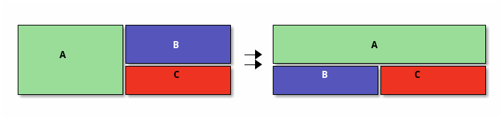
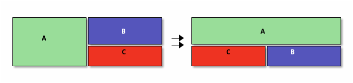
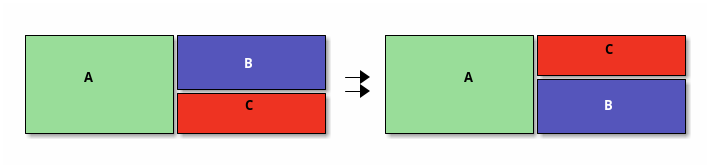
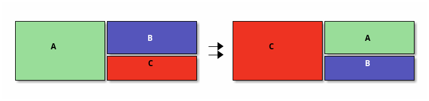
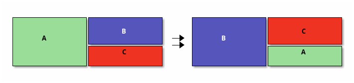

Intro
Around September 2024, I also discovered this useful package for emacs windows management transpose-frame.el.
Around this time, I read Tobias' article on doing things that scale1.
So of course, as a changed man, I sent a simple email asking for
tranpose-frame.el to be moved to emacs core. But as it
turned out, the package had many things wrong at it's core which would
be impossible to fix without a rewrite.
Basiclly, transpose-frame.el relies on "copy pasting"
window states(like the buffer, overlays, etc…), which was a faulty
approach2. The correct approach required new code in emacs C-land
to be able to 'necromance' window objects when using the function
split-window. For this reason, simply changing up the code
in transpose-frame.el would not be sufficant. A full
rewrite was required.
So, not knowing how much work was in, I agreed to do it. So after
about 4 months of infrequent, painful work3, including constant
collaboration with Martin Rudalics, the windows.c and
windows.el maintainer who take care of all the code in
the C-land size. Now, emacs 31 has all the functionality that
transpose-frame.el had, plus extra. The file containg all
these comands is window-x.el, which can be found
here:
https://github.com/emacs-mirror/emacs/blob/master/lisp/window-x.el.
Commands
Now, I used a simple layout for the following images simply cause I was too lazy to make more complex ones. Keep in mind, that these commands can work for any complex window layout you can cook up.
I would suggest trying them and playing around with them, but if you don't have emacs 31, this is a preview.
Transpose
M-x transpose-window-layout
This one is basiclly diagonal reflection.

Rotate layout
M-x rotate-window-layout-clockwise
M-x rotate-window-layout-anticlockwise

Flip
M-x flip-window-layout-horizontally
M-x flip-window-layout-vertically

Cycle (rotate windows)
This one is my personal favourite.
M-x rotate-windows

M-x rotate-windows-back
